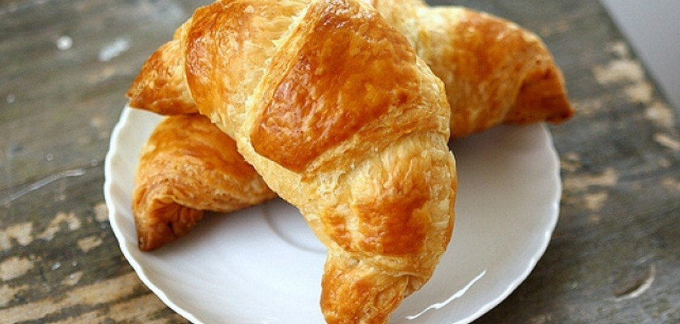
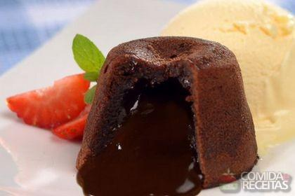
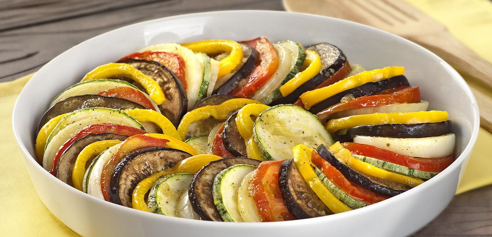
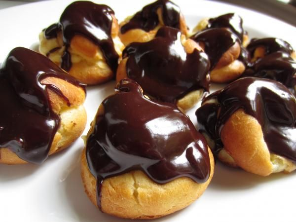
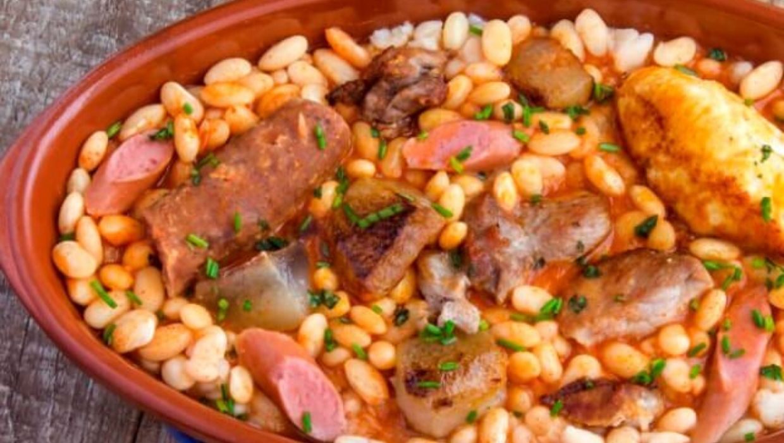

Conheça mais sobre a França
por João Figueiredo
Pratos Tipicos França
Nesta aba eu irei lhe mostrar alguns dos principais pratos típicos da França observe abaixo
- Croissant 
- Petit Gateau 
- Ratatouille 
- Profiterole 
- Cassoulet 
Um croissant, em português, croassã ou croassão, é um pão de massa folhada em formato de meia-lua, feito de farinha, açúcar, sal, leite, fermento, manteiga e ovo para pincelar.
Petit gâteau é uma sobremesa composta de um pequeno bolo de chocolate com casca e recheio cremoso servido geralmente acompanhado de sorvete.
Ratatouille é uma clássica receita francesa provençal de legumes cozidos do século XVIII, podendo ser servida quente ou fria, sozinha ou como acompanhamento.
Profiterole é uma sobremesa feita com uma massa açucarada recheada com cremes, sorvetes e caldas de acordo com a preferência do consumidor.
O cassoulet é uma especialidade gastronômica de origem francesa da região de Languedoc-Roussillon, em especial das cidades de Carcassonne, Castelnaudary e Toulouse.